We tested whether publicly disclosed `PIF` 13F holdings contain investable information once the filing lag is respected. Trades were simulated from the first tradable NYSE close after the public filing date, not from the quarter-end report date. The mark-to-market layer uses split-adjusted closes to avoid false gains from reverse splits and similar corporate actions.
| Strategy | Design | Total Return | CAGR | Ann. Vol | Max Drawdown | Avg Positions | Avg Max Weight |
|---|---|---|---|---|---|---|---|
| P1 | New Positions Mirror | -75.8% | -20.2% | 60.4% | -94.8% | 6.47 | 59.7% |
| P2 | Full Sleeve Equal Weight | -32.3% | -5.2% | 43.1% | -81.1% | 18.84 | 23.6% |
| P3 | Accumulation Tilt | -69.3% | -15.0% | 48.7% | -88.7% | 17.86 | 27.5% |
| P4 | Exit Avoidance | -45.2% | -7.9% | 44.8% | -80.9% | 17.86 | 25.9% |
| P5 | Cash-Aware Copy Trade | 48.9% | 5.6% | 38.3% | -62.6% | 8.50 | 61.6% |
The analysis layer rechecked arithmetic consistency, gross exposure, weight normalization, entry-day PnL leakage, and exact-price coverage. The current result set is mechanically coherent.
| Strategy | Arithmetic Violations | Weight Sum Range | Entry-Day PnL Violations | Non-Exact Price Rows |
|---|---|---|---|---|
| P1 | 0 | 1.000000 to 1.000000 | 0 | 1 |
| P2 | 0 | 1.000000 to 1.000000 | 0 | 28 |
| P3 | 0 | 1.000000 to 1.000000 | 0 | 20 |
| P4 | 0 | 1.000000 to 1.000000 | 0 | 20 |
| P5 | 0 | 0.002331 to 1.000000 | 0 | 22 |
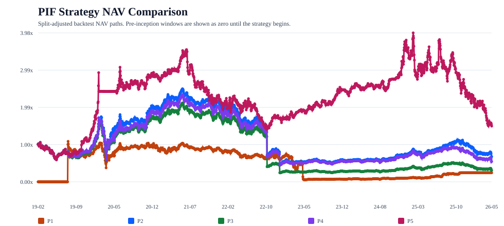
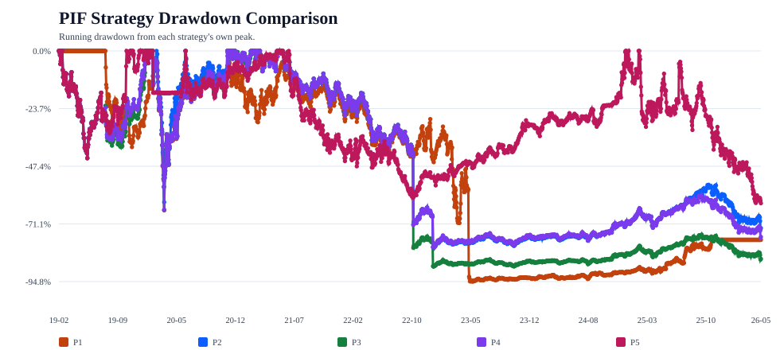
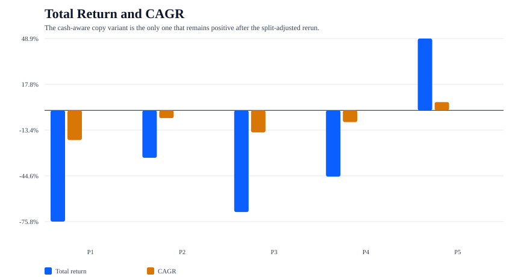
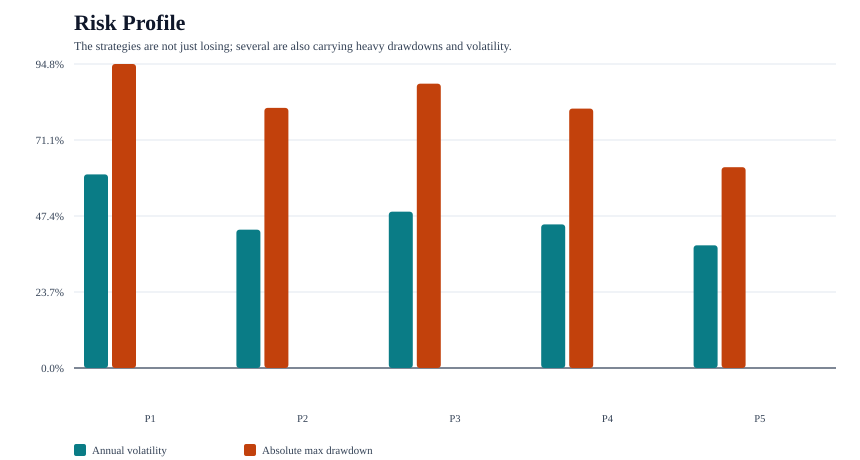
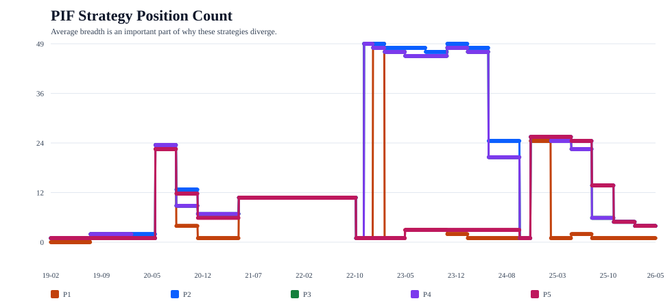
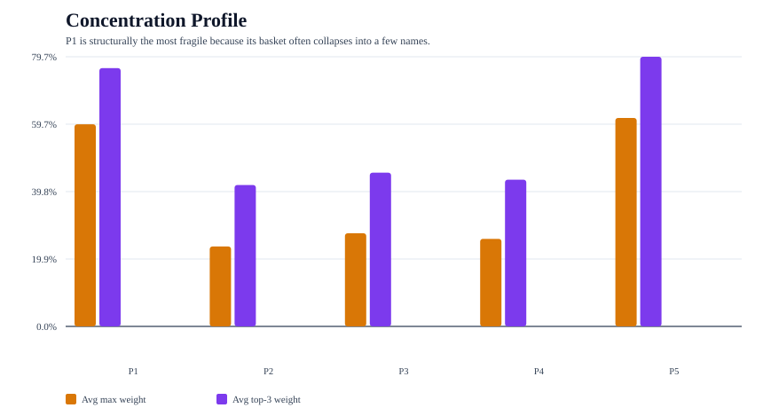
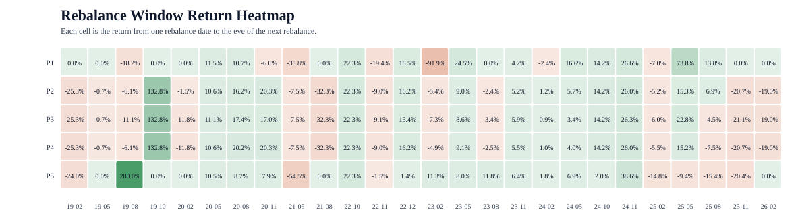
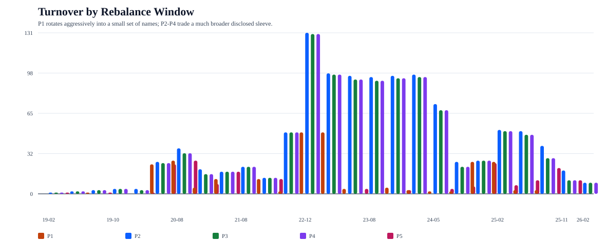
`P1` is the clearest failure. The strategy buys only newly disclosed names, so it arrives after the disclosure lag and often with only a tiny basket. The cohort-level signal is not useless on simple average (`11.9%` mean forward return and `73.6%` hit rate), but the realized portfolio is too concentrated. The worst single forward return inside the entry sample is `-91.9%`, and the strategy's average max weight stays near `60%`.
`P2` loses less because diversification helps. It spreads risk across the broad disclosed sleeve and avoids the severe single-name concentration of `P1`. Even so, the result is still negative. That implies the disclosed sleeve, when mirrored with lag and equal weights, does not provide sufficient edge to overcome the combination of delay, partial observability, and subsequent market performance.
`P3` is more interesting analytically than `P2`. The accumulation-like bucket does outperform the neutral bucket on simple forward averages, which suggests there may be some directional information in share-count changes. But the implemented portfolio loses badly because the tilt magnifies exposure to a smaller set of names with fatter downside tails. In other words, the signal may exist, but this expression of it is too concentrated.
`P4` fails more simply: the reduction-avoidance heuristic does not work in this sample. The names flagged as likely reductions go on to outperform the names that remain in the sleeve on average, so excluding them is directionally harmful.
`P5` is the first strategy whose logic lines up with the intuitive copy-trading story. It sells what the disclosed sleeve appears to sell, keeps those proceeds in cash, and funds later disclosed buys only from that available cash. That matters. Instead of mechanically concentrating into a shrinking set of survivors, the strategy allows gross exposure to fall when `PIF` appears to be reducing the visible sleeve. In this sample, that change in capital treatment is enough to turn the strategy positive.
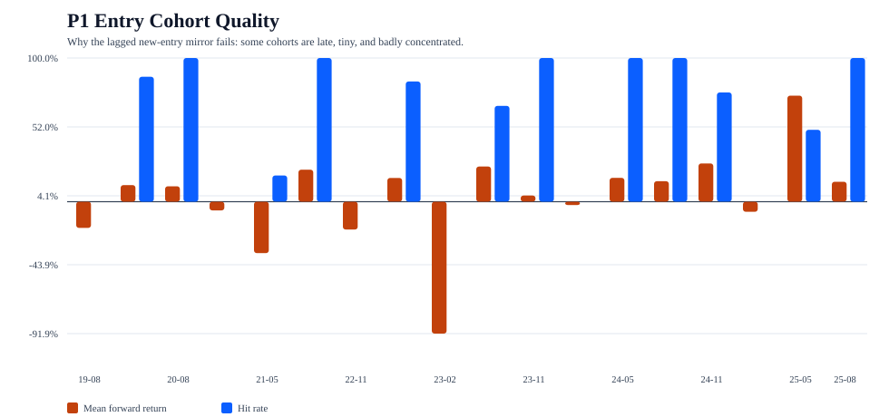
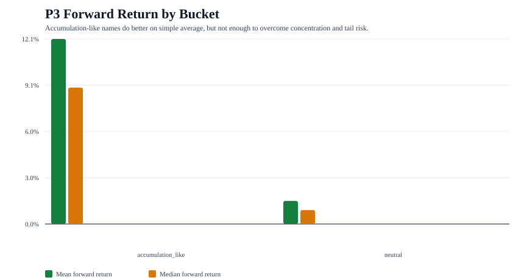
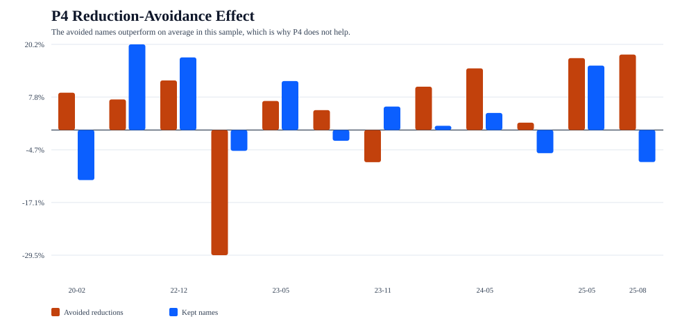
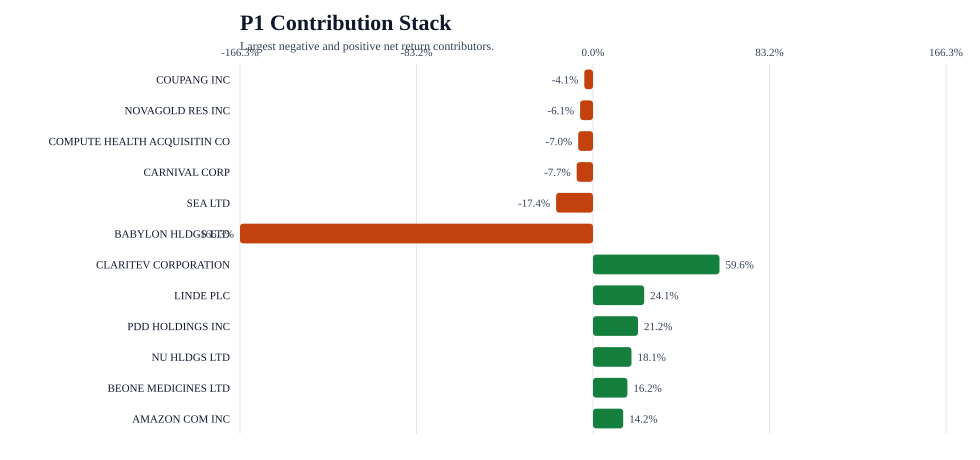
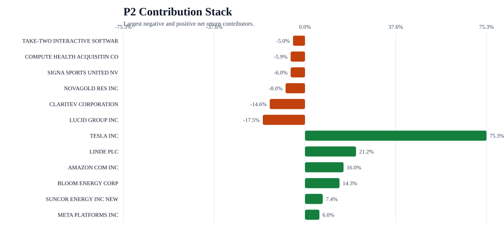
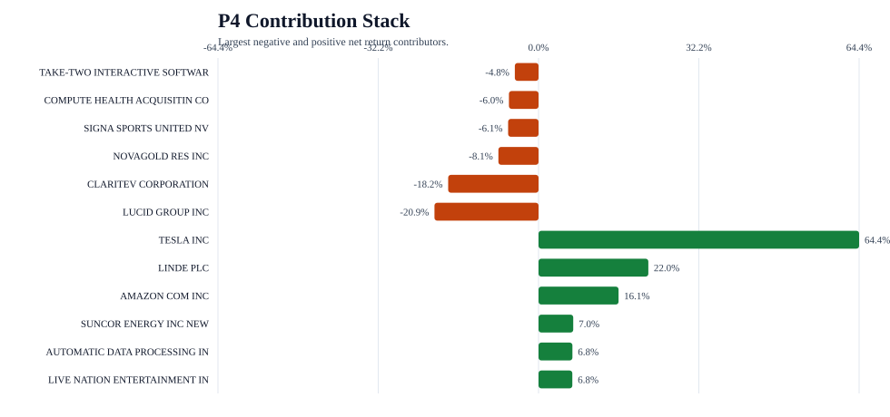
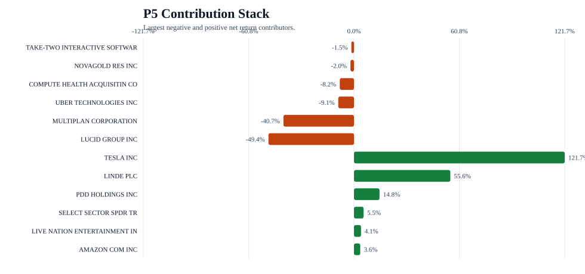
The corrected backtests support a narrower but more interesting conclusion than the earlier fully invested variants suggested. A naive lagged mirror of the disclosed `PIF` sleeve is unattractive, but a cash-aware copy-trade that respects disclosed sells as genuine de-risking does generate positive return in this sample. That suggests the disclosure edge, if it exists at all, is less about blindly owning what `PIF` owns and more about respecting how the visible sleeve expands or contracts over time.